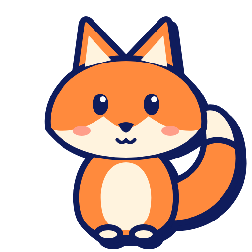
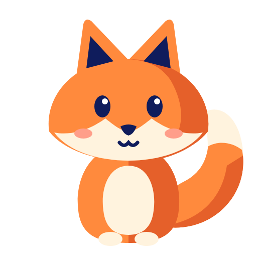
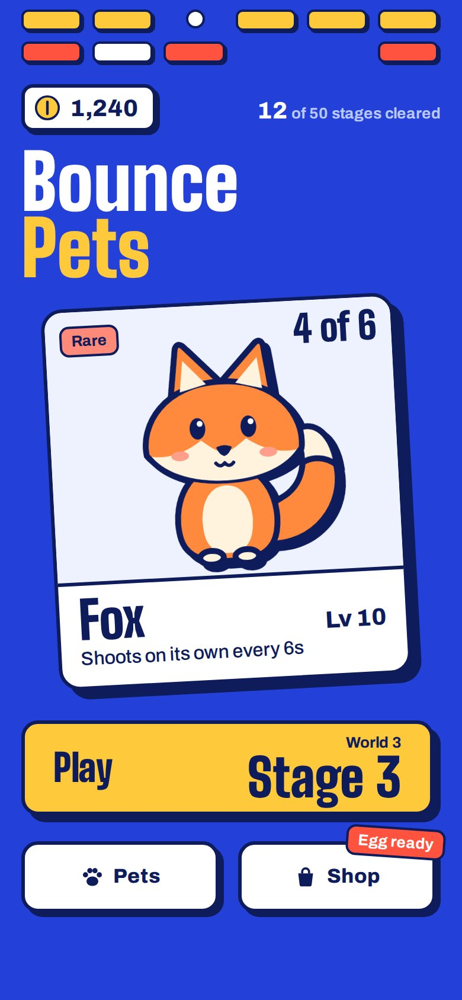
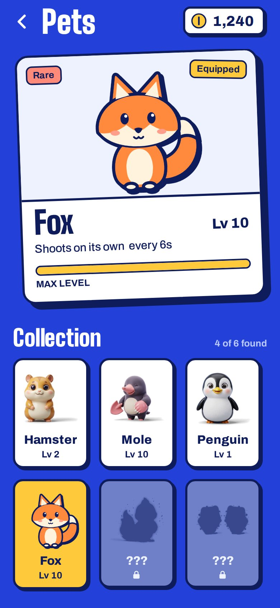
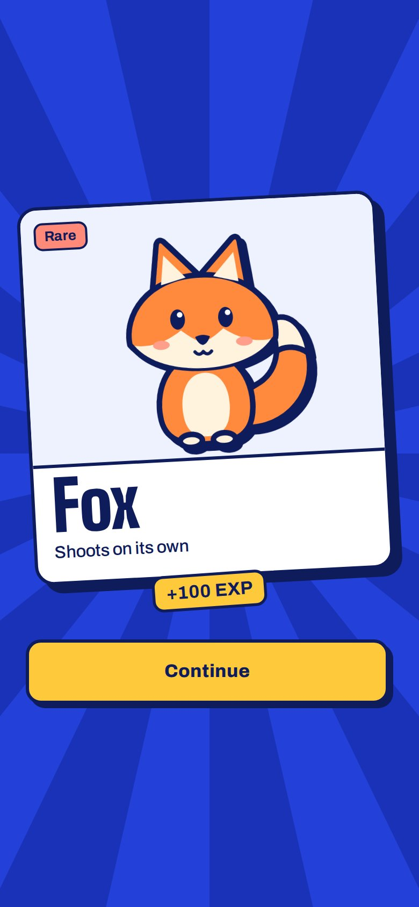
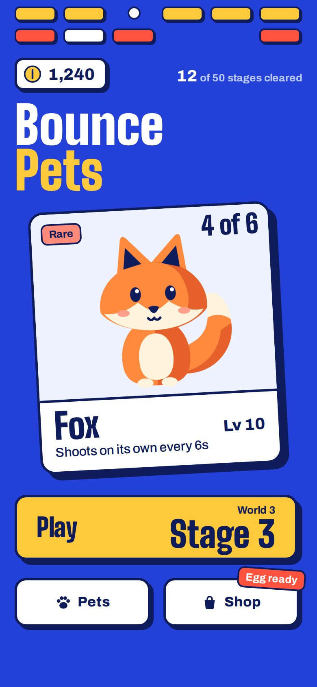
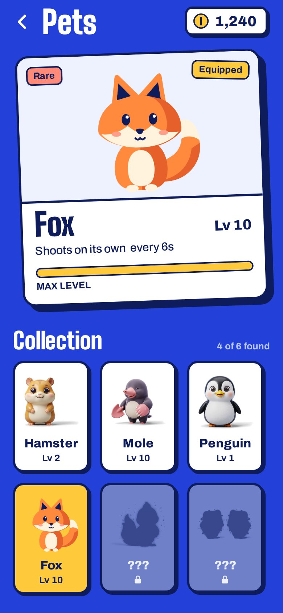
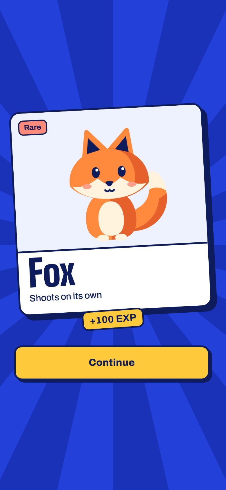
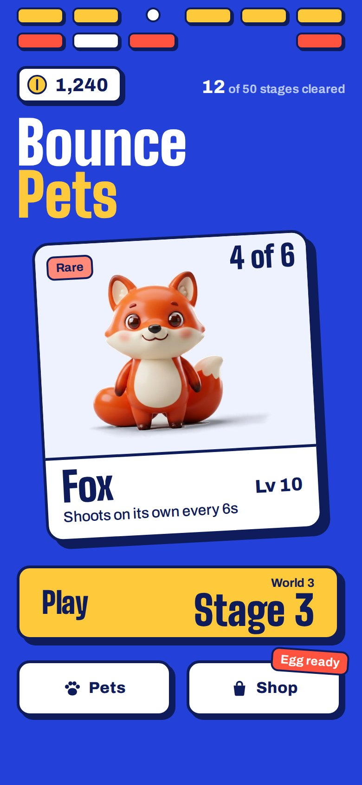
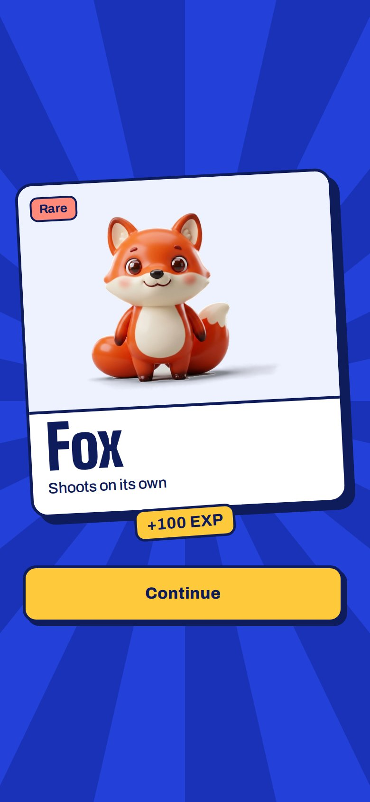

Pet art: pick a direction
The fox redrawn flat, in two ways, so it sits in the app's look instead of floating on top of it. Once a direction is chosen, all six pets and the app icon get redrawn in it. Only the fox is swapped in these samples; the other pets are still the 3D ones, which shows the contrast.

A. Outlined sticker
Navy outline and a hard navy shadow, the same as the app's buttons and cards. Reads well at small sizes.Try it in the app
B. Cut paper
No outline. Flat shapes with one darker tone for shade. Softer and lighter.Try it in the appA. Outlined sticker



B. Cut paper



Now: 3D

